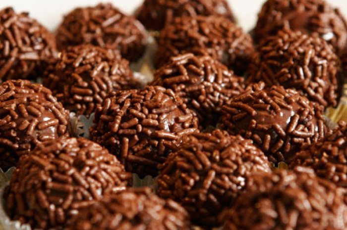

Brigadeiro
O brigadeiro é um doce típico da culinária brasileira, de origem paulista, o qual rapidamente se difundiu pelo resto do país.
Origem do Nome
A origem do nome "brigadeiro" é ligada à campanha presidencial do Brigadeiro Eduardo Gomes, candidato da UDN à Presidência da República em 1946.
Ingredientes
Os ingredientes do brigadeiro são leite condensado, chocolate em pó, manteiga e chocolate granulado para a cobertura. Pode ser feito tanto no fogão quanto no forno de micro-ondas.
Outros sabores
Ovomaltine, limão siciliano, cachaça e passas, chocolate e castanha do Pará, bala de caramelo, branco com creme de cacau, Rosa, entre outros
